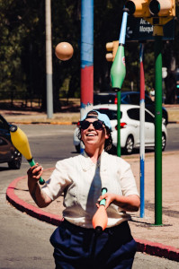
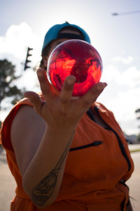
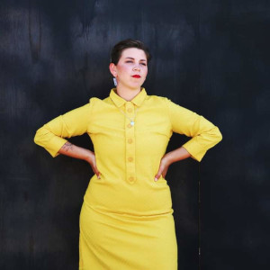
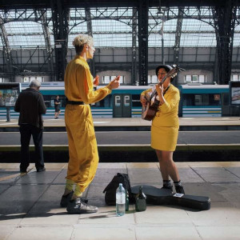
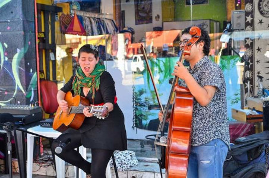
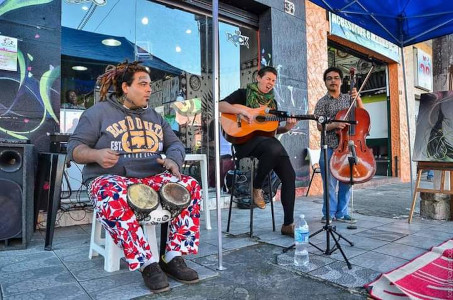

Yandi Iriarte:
Yandi Iriarte e multiartista e ativista. Cantante,malabarista,instrumentista e palhaça. Natural do Uruguai. Com sua arte e performances tem viajado ou Peru, Bolívia, Argentina e Brasil. Ex-moradora da ocupação Ouvidor 63. Apresentou no 15º festival internacional de cine sobre diversidade sexual e gênero "Llamale H" (Uruguai 2021), com a banda @desidentes da qual participou 3 anos. Com mais de 10 anos de artista de rua, seu repertório musical tem muito folclore latino-americano






